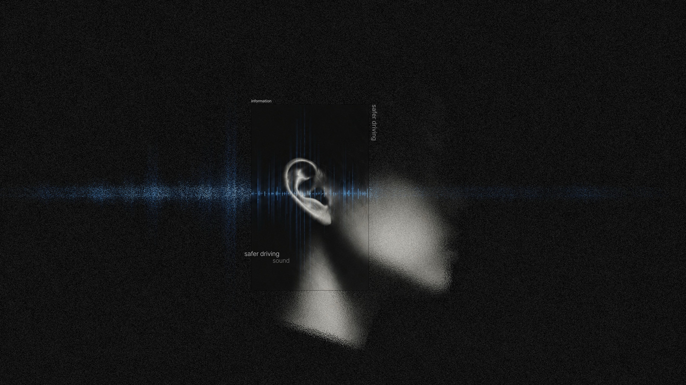
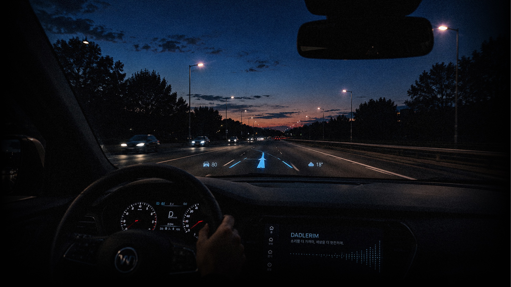
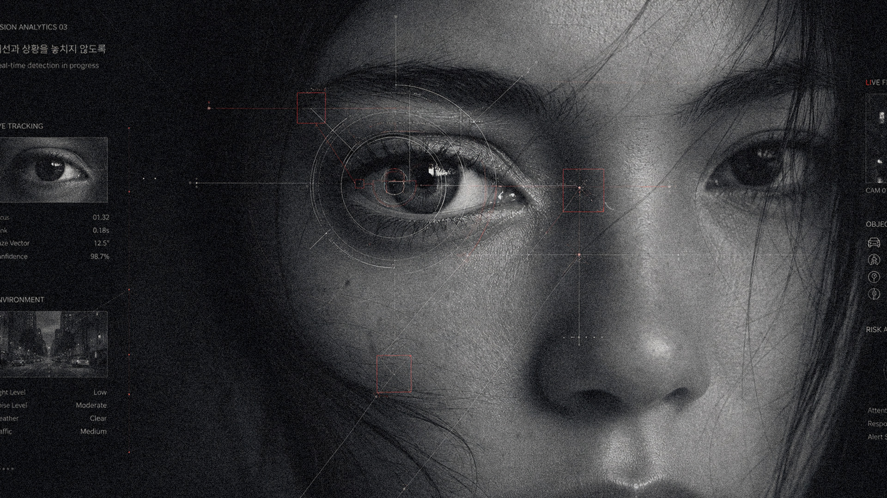
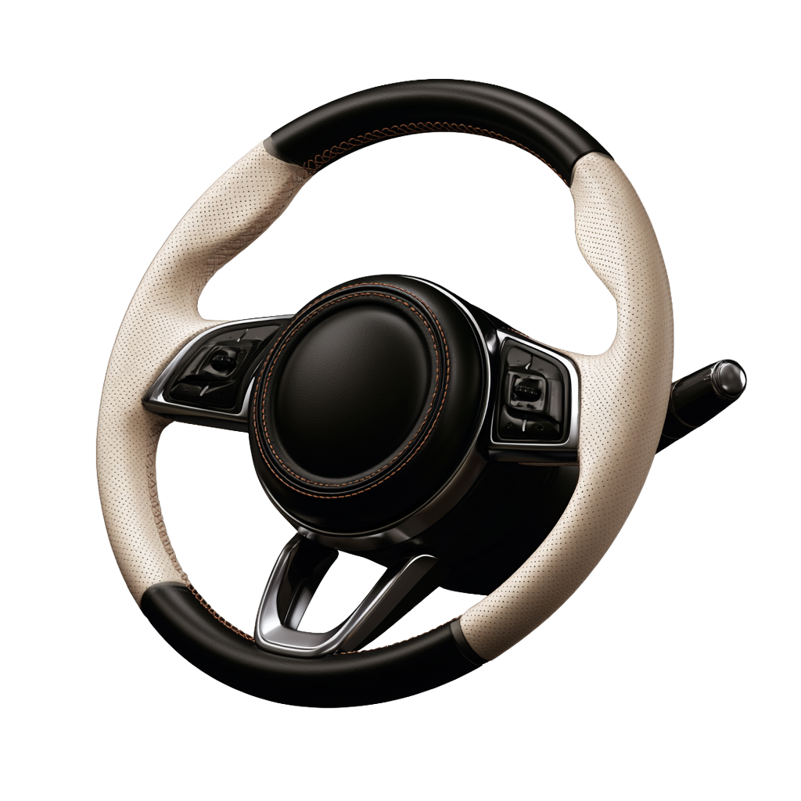
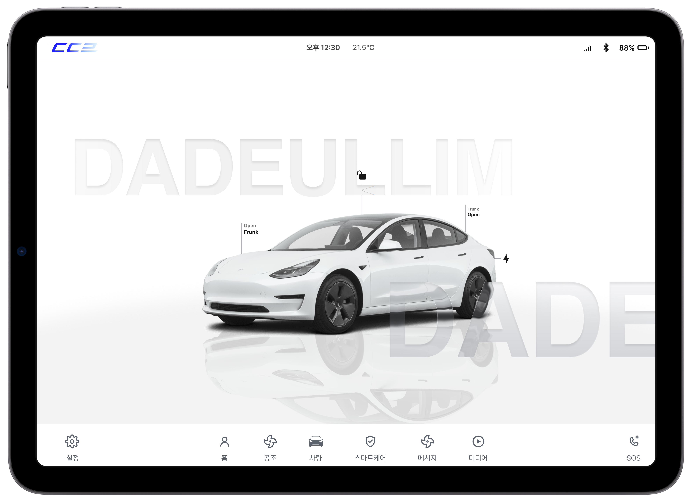
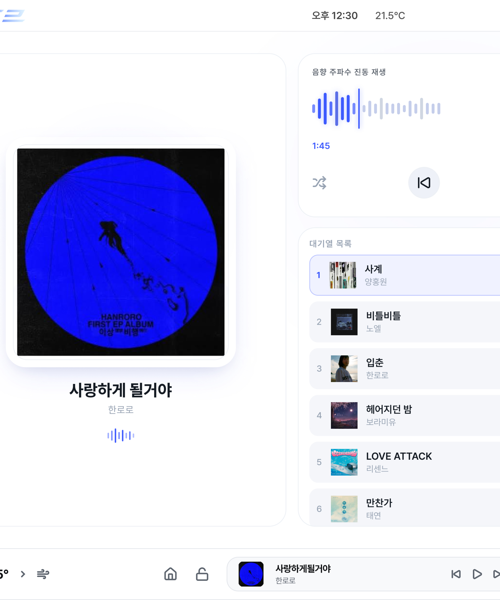
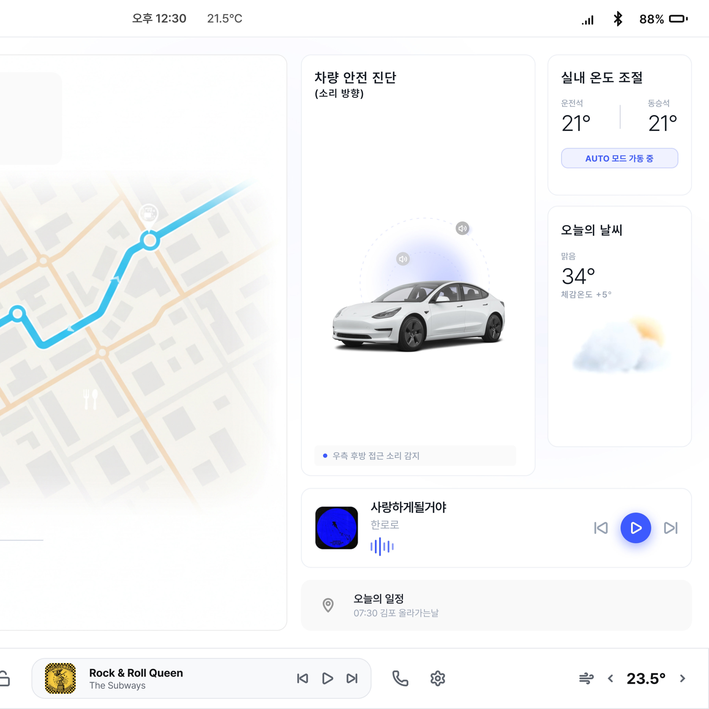

( 문제 인식 )
다들림은 소리가
놓치는 지점에서
시작합니다.
01
도로의 중요한 신호는 여전히 소리에 의존합니다.
다들림은 그 과정에서 놓치기 쉬운 정보에 주목
( 다들림의 해결 방식 )
다들림은 소리를
정보로 바꿉니다.
02
경적, 사이렌, 차량 경고음을 명확한 시각 정보와
진동 신호로 변환
( 새로운 주행 경험 )
시선과 상황을,
놓치지 않도록.
03
HUD, 차량 인터페이스와 진동을 통해
주행 흐름을 방해하지 않고 필요한 정보를 전달



01 / 03
2026
SEOUL
REPUBLIC OF KOREA

dadeullim
Sound identity
About
다들림의 핸들 진동 시스템은 위험 정보를 촉각으로 전달해 운전자가 상황을 빠르고 직관적으로 인지하도록 돕습니다. 위험이 감지된 방향의 핸들이 진동해 위험 방향을 즉각 알려줍니다.
위험도가 높을수록 진동의 강도가 강해져 긴급도를 구분할 수 있으며,
시각과 청각 정보에만 의존하지 않고 촉각까지 활용해
더욱 안전하고 직관적인 주행 경험을 제공합니다.
정면이나 후방과 같이 방향을 특정하기 어려운 위험 상황에서는
핸들 중앙을 중심으로 진동을 전달합니다.
02
More page
Digital experience

03
스마트 주행 안내
길 위의 정보를
한눈에
실시간 경로와 주변 정보를 직관적으로 제공해
운전자가 더욱 편리하고 안정적으로 이동할 수 있도록 돕습니다.

04

통합 주행 시스템
주행에 필요한 모든
정보를 한곳에
차량 상태부터 날씨, 미디어까지 다양한 정보를 하나의 화면에 구성해
운전 중 필요한 기능을 빠르고 편리하게 확인할 수 있습니다.
56px
34px
16px
12px
Display
HEAD - UP
시선은 도로에,
정보는 눈앞에.
주행에 필요한 핵심 정보를 운전자의 시야 안에 직관적으로 표시해,
시선을 분산시키지 않고 더 빠르고 안전하게 상황을 인지할 수 있도록 합니다.
03 Head-Up Display
Roman
04
CORE VALUE
01
접근성
IDENTITY
Brand system
02
안전성
PRODUCT
Audio design
03
직관성
DIGITAL
Web experience
04
즉시성
INTERFACE
User interaction
05
포용성
EXPERIENCE
Sound and emotion